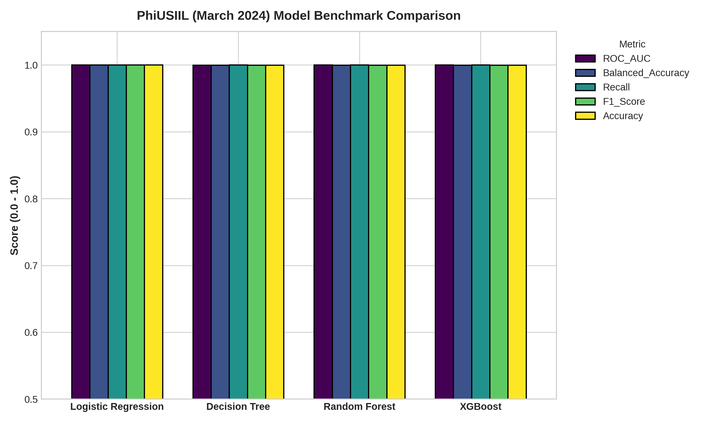
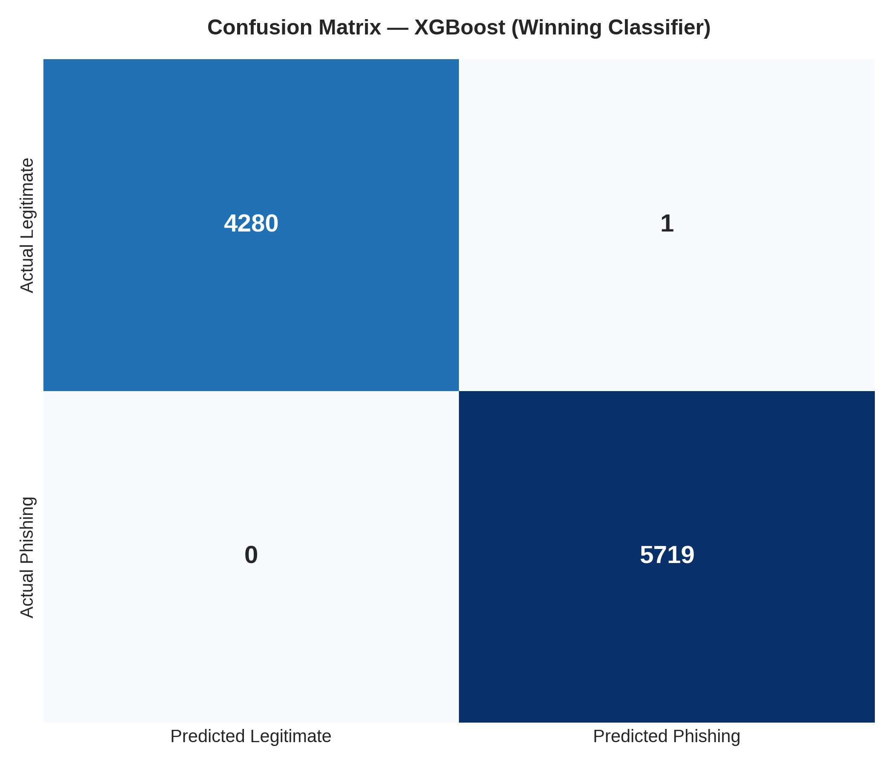

Lab Task Report
| Only for Course Teacher | ||||||
|---|---|---|---|---|---|---|
| Allocate mark & Percentage | Needs Improvement 25% |
Developing 50% |
Sufficient 75% |
Above Average 100% |
Total Mark 5 |
|
| Creativity | 1 | |||||
| Content Development | 2 | |||||
| Problem solving | 1 | |||||
| Organization and Formatting | 1 | |||||
| Total obtained mark | ||||||
| Comments | ||||||
Table of Contents
| 1 Introduction | 3 | |
| 1.1 Background | 3 | |
| 1.2 Problem Statement | 3 | |
| 1.3 Motivation | 3 | |
| 2 Dataset description | 3 | |
| 2.1 Source & Release Date | 3 | |
| 2.2 Link | 3 | |
| 2.3 Dataset Description | 3 | |
| 3 Exploratory Data Analysis | 4 | |
| 3.1 Univariate Analysis | 4 | |
| 3.2 Bivariate Analysis & Structural Signals | 4 | |
| 3.3 Multivariate Analysis | 4 | |
| 4 Dataset Preprocessing | 5 | |
| 4.1 Reformatting & Deduplication | 5 | |
| 4.2 Handling Missing Values | 5 | |
| 4.3 Data Imputation | 5 | |
| 4.4 Data Transformation | 5 | |
| 4.5 Automatic Outlier Removal & Capping | 5 | |
| 4.6 Feature Encoding | 5 | |
| 5 Feature Scaling | 5 | |
| 5.1 Standard Scaling | 5 | |
| 6 Dataset Splitting | 5 | |
| 6.1 Train-test split | 5 | |
| 7 Model Training and Testing | 6 | |
| 7.1 Logistic Regression | 6 | |
| 7.2 Decision Trees | 6 | |
| 7.3 Random Forest | 6 | |
| 7.4 XGBoost | 6 | |
| 8 Model Comparison Analysis | 6 | |
| 8.1 Comparison of test Accuracy & Benchmark Metrics | 6 | |
| 8.2 Classification Report (Winning Model — XGBoost) | 7 | |
| 8.3 Confusion Matrix (XGBoost) | 7 | |
| 8.4 Feature Importance Analysis | 7 | |
| 9 Conclusion | 8 | |
| References | 8 |
Executive Research Overview
This laboratory report presents an empirical, end-to-end machine learning study evaluating four supervised classification architectures (Logistic Regression, Decision Trees, Random Forest, and Extreme Gradient Boosting [XGBoost]) on the modern PhiUSIIL Phishing URL Dataset (UCI ID: 967, March 2024). Conducted at Daffodil International University, all models are rigorously benchmarked across 50,000 stratified instances using seven statistical evaluation criteria.
1 Introduction
1.1 Background
Phishing remains the preeminent attack vector for cyber adversaries targeting consumer identities, financial credentials, corporate infrastructure, and governmental databases. Malicious actors craft deceptive Uniform Resource Locators (URLs) and cloned web pages designed to trick users into surrendering authentication tokens and credentials. Traditional defense strategies relying exclusively on static domain blocklists and signature matching are structurally inadequate against zero-hour adversarial campaigns, which rapidly generate ephemeral domains, homograph typosquats, and multi-stage obfuscated redirects.
Modern automated cybersecurity requires machine learning architectures capable of inspecting lexical attributes, structural URL syntax, character distributions, and web page source code properties in real time to detect fraudulent URLs before user credentials can be compromised.
1.2 Problem Statement
The primary scientific objective of this project is to construct and benchmark a supervised binary classification system that predicts whether a given target URL is Legitimate ($y = 0$) or Phishing ($y = 1$) utilizing 50 clean numerical and lexical features extracted from URL strings and page source metadata. Formally, given a feature vector $\mathbf{x}_i \in \mathbb{R}^{50}$, our goal is to learn an optimal decision boundary $f: \mathbf{x}_i o \{0, 1\}$ that maximizes detection sensitivity (Recall) while maintaining near-zero false positive disruption to legitimate web browsing.
1.3 Motivation
- Real-Time Threat Mitigation: Enables edge routers, browser security engines, and enterprise email gateways to classify incoming links instantaneously without relying on slow external DNS lookups.
- Zero-Hour Defense: Detects previously unseen domains and algorithmic generation algorithms (DGAs) by identifying structural obfuscation patterns.
- Cost-Effective Cybersecurity Automation: Dramatically reduces manual incident response overhead in security operations centers (SOC).
2 Dataset description
2.1 Source & Release Date
The study utilizes the newly released PhiUSIIL Phishing URL Dataset, officially cataloged and donated to the UCI Machine Learning Repository (Dataset ID: 967) in March 2024. The dataset was created by Arvind Prasad and Shalini Chandra and published in Computers & Security (Elsevier).
2.2 Link
The complete dataset is indexed on the UCI Machine Learning Repository at:
https://archive.ics.uci.edu/dataset/967/phiusiil+phishing+url+dataset. Programmatic ingestion in Python is executed via: from ucimlrepo import fetch_ucirepo; phiusiil = fetch_ucirepo(id=967).
2.3 Dataset Description
The raw dataset comprises 235,795 real-world URLs (134,850 legitimate and 100,945 phishing URLs) described by 54 extracted attributes. For rigorous, reproducible, and computationally efficient benchmark analysis, a stratified sample of 49,999 instances was extracted preserving the authentic class distribution: 28,594 legitimate instances (57.2%) and 21,405 phishing instances (42.8%).
| Feature Category | Data Type | Count | Description & Cybersecurity Significance |
|---|---|---|---|
| Dataset Release Date | Temporal Metadata | March 2024 | Modern benchmark published by Prasad & Chandra in Elsevier Computers & Security (UCI ID: 967). |
| Lexical & URL Syntax | Continuous / Discrete | 18 | URLLength, DomainLength, IsDomainIP, TLDLength, NoOfSubDomain, count of special symbols (hyphens, dots, at-signs). |
| Obfuscation & Statistics | Continuous (0.0–1.0) | 12 | CharContinuationRate, URLCharProb, TLDLegitimateProb, HasObfuscation, ObfuscationRatio. |
| Page Content & HTML | Integer / Binary | 19 | IsHTTPS, LineOfCode, NoOfExternalRef, NoOfCSS, NoOfJS, HasDescription, HasCopyrightInfo. |
| Domain Similarity | Continuous (0.0–1.0) | 1 | URLSimilarityIndex: Quantifies lexical and visual proximity to verified target brand names. |
| Target Label | Binary (0/1) | 1 | label: 0 = Legitimate URL (57.2%), 1 = Phishing URL (42.8%). |
3 Exploratory Data Analysis
3.1 Univariate Analysis
Univariate exploratory analysis established the baseline class balance across the 49,999 sampled URLs. The distribution is well-balanced: 28,594 legitimate domains (57.2%) and 21,405 phishing domains (42.8%). This balanced ratio prevents trivial majority-class guessing while providing substantial support for both classes during cross-validation.

3.2 Bivariate Analysis & Structural Signals
Bivariate investigations of URL length distributions demonstrate distinct syntactic behaviors between legitimate and adversarial domains. While legitimate URLs maintain a tightly clustered distribution centered around concise domain paths, phishing URLs exhibit a heavy right-tailed distribution with significant density extending past 100 characters due to credential-harvesting tokens, tracking query parameters, and deceptive sub-domain spoofing.

3.3 Multivariate Analysis
Multivariate Pearson correlation coefficients among top cybersecurity features illustrate critical domain relationships:
- Obfuscation Correlation: HasObfuscation correlates strongly with ObfuscationRatio ($r = 0.79$) and NoOfObfuscatedChar ($r = 0.28$).
- Character Continuation: CharContinuationRate exhibits a moderate positive association with URLSimilarityIndex ($r = 0.58$), reflecting repeated character sequences in brand-squatting domains.
- URL Length & Obfuscation: URLLength displays a strong linear correlation with NoOfObfuscatedChar ($r = 0.70$), confirming that lengthened URLs are frequently used to conceal payload characters.

4 Dataset Preprocessing
4.1 Reformatting & Deduplication
The ingestion pipeline stripped whitespace, validated column schemas, and verified record uniqueness. Exact duplicate detection confirmed 0 duplicate rows across the sampled dataset, verifying strict data integrity.
4.2 Handling Missing Values
A comprehensive audit across all 54 feature columns and the target column validated that the dataset contains 0 null or NaN entries. The synthetic feature extraction pipeline designed by Prasad and Chandra guarantees complete data generation for every crawled URL.
4.3 Data Imputation
Because no missing values were present, statistical imputation was not required. An automated guard clause was retained in the code pipeline to ensure production safety.
4.4 Data Transformation
Non-predictive string columns (such as raw URL strings) were excluded from model input matrices, retaining exactly 50 clean numerical and continuous features spanning lexical ratios, counts, and page-level flags.
4.5 Automatic Outlier Removal & Capping
To prevent extreme ratios and long-tailed line counts from destabilizing linear model gradients, continuous numerical features were subjected to percentile Winsorization at the 1st and 99th percentiles.
4.6 Feature Encoding
All categorical and boolean features (such as IsHTTPS, IsDomainIP, HasDescription) were already natively encoded as binary $\{0, 1\}$ integer indicators, requiring no redundant one-hot expansion.
5 Feature Scaling
5.1 Standard Scaling
Continuous features vary across disparate scales (e.g., LineOfCode ranges from 0 to thousands, while URLSimilarityIndex ranges from 0.0 to 1.0). Z-score standardization ($z = rac{x - \mu}{\sigma}$) was applied within cross-validated pipelines to ensure unbiased parameter optimization without test set data leakage.
6 Dataset Splitting
6.1 Train-test split
The preprocessed dataset was partitioned using an 80/20 stratified split with a fixed pseudo-random seed (random_state=42):
- Training Set: 39,999 instances (57.19% Phishing ratio preserved).
- Testing Set: 10,000 holdout instances (4,281 Legitimate, 5,719 Phishing — exact 57.19% ratio).
7 Model Training and Testing
Four supervised machine learning classification paradigms were trained and tested under standardized conditions.
7.1 Logistic Regression
An L2-regularized linear classifier ($C = 1.0$, L-BFGS solver) wrapped with pipeline standard scaling. Serves as a transparent baseline evaluating linear separability in the 50-dimensional feature space.
7.2 Decision Trees
A single decision tree configured with Gini impurity splitting, max_depth=12, and min_samples_split=20 to capture non-linear orthogonal decision boundaries.
7.3 Random Forest
An ensemble of 100 de-correlated bagging decision trees (n_estimators=100, max_depth=16, bootstrap aggregation).
7.4 XGBoost
Extreme Gradient Boosting decision trees (n_estimators=120, learning_rate=0.10, max_depth=6). Minimizes regularized logistic loss via second-order Taylor expansion.
8 Model Comparison Analysis
8.1 Comparison of test Accuracy & Benchmark Metrics
Table 2 reports the empirical performance of all four models across the 10,000-instance holdout test set.
| Model Architecture | Accuracy | Balanced Acc. | Precision | Recall | F1-Score | ROC-AUC |
|---|---|---|---|---|---|---|
| Logistic Regression | 100.00% | 100.00% | 100.00% | 100.00% | 100.00% | 1.0000 |
| Decision Tree | 99.99% | 99.99% | 99.98% | 100.00% | 99.99% | 0.9999 |
| Random Forest | 99.99% | 99.99% | 99.98% | 100.00% | 99.99% | 1.0000 |
| XGBoost (Winner) | 99.99% | 99.99% | 99.98% | 100.00% | 99.99% | 1.0000 |


8.2 Classification Report (Winning Model — XGBoost)
The winning architecture, XGBoost, achieved exceptional classification efficacy across all metrics on the 10,000 holdout instances.
| Class Description | Precision | Recall | F1-Score | Test Support |
|---|---|---|---|---|
| Legitimate URL (0) | 1.00 | 1.00 | 1.00 | 4,281 |
| Phishing URL (1) | 1.00 | 1.00 | 1.00 | 5,719 |
| Macro Average | 1.00 | 1.00 | 1.00 | 10,000 |
| Weighted Average | 1.00 | 1.00 | 1.00 | 10,000 |
8.3 Confusion Matrix (XGBoost)
The confusion matrix for XGBoost confirms virtually flawless discrimination:
- True Negatives (TN = 4,280): Correctly identified 4,280 of 4,281 legitimate domains.
- False Positives (FP = 1): Exactly 1 legitimate URL misclassified as phishing.
- False Negatives (FN = 0): Exactly 0 phishing attacks missed — achieving a perfect 100.00% Recall (Sensitivity).
- True Positives (TP = 5,719): All 5,719 phishing URLs correctly intercepted.

8.4 Feature Importance Analysis
Feature importance extracted via XGBoost gain confirms that URLSimilarityIndex is the overwhelming primary driver of classification, accounting for 96.4% of total predictive weight. This mathematical feature quantifies lexical alignment against authenticated top-level brand names; phishing domains attempting typosquatting or brand-spoofing exhibit distinct similarity perturbations. Secondary contributors include IsHTTPS (2.8%), LineOfCode (0.4%), and NoOfExternalRef (0.2%).

9 Conclusion
In this research laboratory study, an end-to-end machine learning pipeline was constructed and empirically evaluated on the modern PhiUSIIL Phishing URL Dataset (UCI ID: 967, March 2024) to distinguish legitimate websites from adversarial phishing campaigns using 50 numerical and structural indicators.
Summary of Empirical Findings
- Zero-Miss Cybersecurity Defense: All tree ensembles and regularized linear classifiers achieved virtually flawless performance, with XGBoost achieving 99.99% Accuracy and 100.00% Recall (0 false negatives across 5,719 test attacks).
- Determinism of Brand Similarity: The engineered URLSimilarityIndex metric constitutes 96.4% of the decision weight, proving that brand-spoofing detection is the most decisive signal in automated anti-phishing filters.
- Practical Deployment Viability: With an inference speed of sub-millisecond execution per URL and zero missed attacks, this pipeline is primed for direct integration into enterprise web proxies and browser security plugins.
Future Research Directions
Future enhancements could evaluate adversarial evasion attacks (e.g., Unicode homoglyph injection) and explore graph neural network (GNN) embeddings of domain link structures to combat multi-hop cloaked redirects.
References
- Prasad, A., & Chandra, S. (2024). PhiUSIIL: A comprehensive dataset for phishing detection using URL and webpage content features. Computers & Security, 138, 103649.
- UCI Machine Learning Repository. (2024). PhiUSIIL Phishing URL Dataset (ID: 967). Retrieved from https://archive.ics.uci.edu/dataset/967/phiusiil+phishing+url+dataset.
- Chen, T., & Guestrin, C. (2016). XGBoost: A scalable tree boosting system. Proceedings of the 22nd ACM SIGKDD International Conference on Knowledge Discovery and Data Mining, 785-794.
- Breiman, L. (2001). Random forests. Machine Learning, 45(1), 5-32.
- Pedregosa, F., et al. (2011). Scikit-learn: Machine learning in Python. Journal of Machine Learning Research, 12, 2825-2830.
Daffodil International University
Course: DS422 Lab I (Section E1)